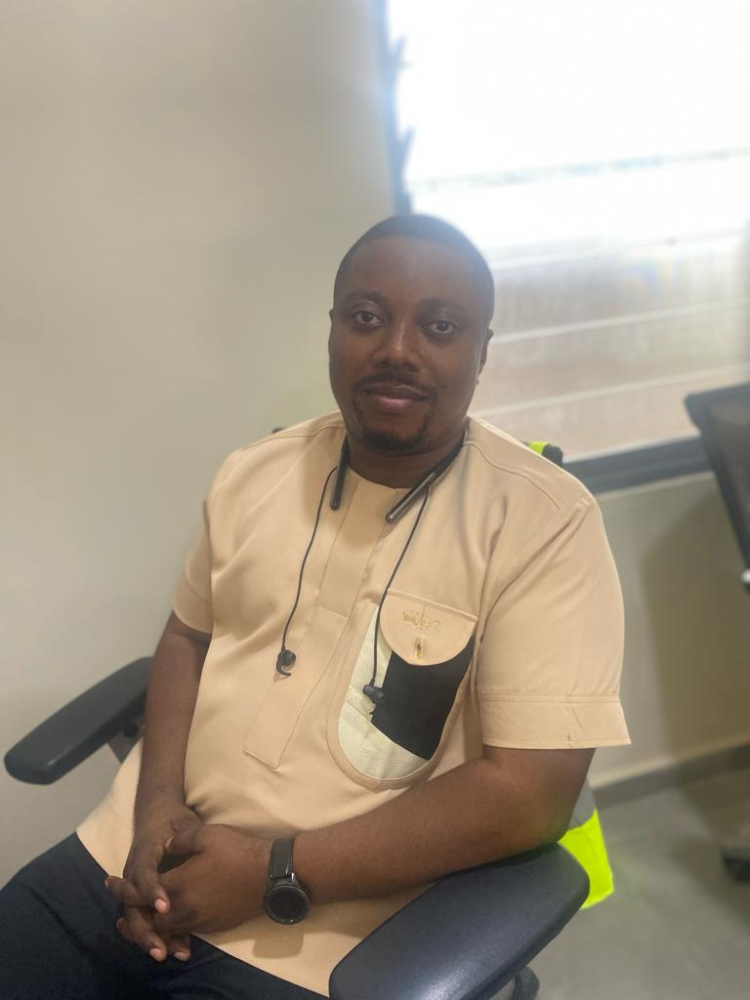

Emmanuel Adjei-Mensah

Summary
A Rural Development Planner and a Software Engineering student
Education
- B. A Psychology - University of Ghana
- Msc. Monitoring and Evaluation - University of Cape Coast, Ghana
Work Experience
Teacher - COHIS, Kumasi(2003-2004)
National Service - Sekyere South D/A (2008-2009)
Executive Officer/ MIS - Sekyere South D/A (2009-2012)
- Administrative and Clerical duties
- Manage Project database
Rural Development Planning Officer - LGS, Ghana (2012-)
- Supervise the preparation of Annual Reports and Development Action Plans and Medium Term Development Plans
- Secretary to the Development Planning Coordinating Unit
- Plan and promotes development policies to facilitate public service delivery and effecticve implmentation of economic develoment projects
Skills
- Report Writing
- Team Player
- Organizational skills
Other